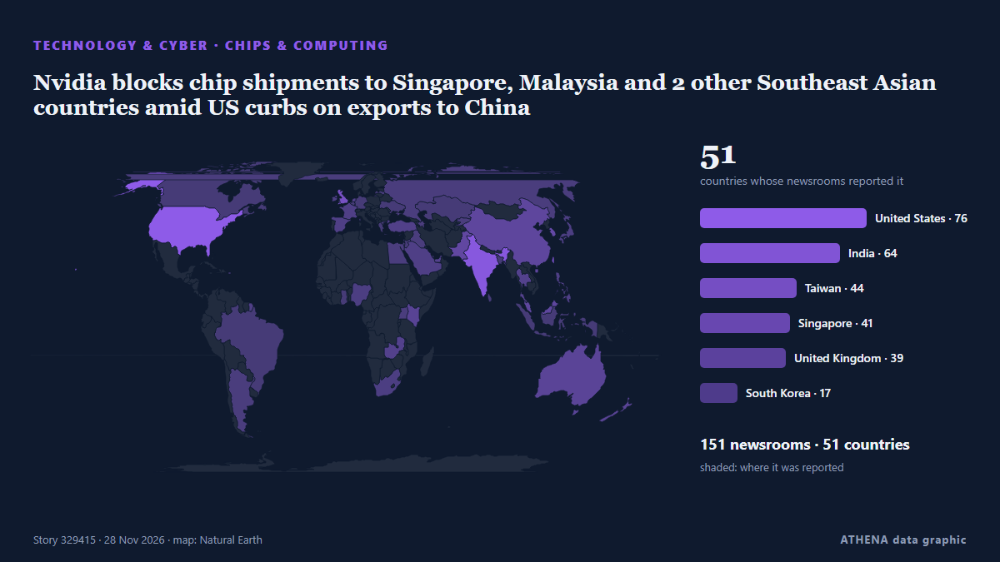

Nvidia blocks chip shipments to Singapore, Malaysia and 2 other Southeast Asian countries amid US curbs on exports to China

ASIA: Nvidia has told its manufacturing partners to halt server shipments to Singapore, Malaysia, Thailand and Indonesia. από The Independent Singapore
Τι άλλαξε 76 νέες αναφορές από 58 μέσα τις τελευταίες 24 ώρες.
Δείτε τις πηγές ›Τεκμήριωση: Επαρκής
Αναφέρθηκε ανεξάρτητα από 152 μέσα σε 51 χώρες από τις 14 Νοε, πρώτο το The Independent· η κάλυψη κορυφώνεται. Το ATHENA εκτιμά τον κίνδυνο μέτριο (3.8/10), κυρίως λόγω της σοβαρότητάς του και της εμβέλειάς του. Βεβαιότητα 86% (υψηλή): το επιβεβαιώνουν 152 ανεξάρτητα μέσα, μέση αξιοπιστία 72%. Μέσα ανά χώρα: Ηνωμένο Βασίλειο (8), Σιγκαπούρη (7), Ηνωμένες Πολιτείες (5). Κάλυψη: 14 Νοε έως 28 Νοε, 317 ώρες.
Τι άλλαξε: 76 νέες αναφορές από 58 μέσα στο 24ωρο έως 28 Νοε.
Πρώτη διατύπωση: Small businesses in Singapore need more guidance to gain AI benefits: Meta study
ΑυτοματοποιημένοΕπιλέχθηκε, ομαδοποιήθηκε και βαθμολογήθηκε με τη δημοσιευμένη μέθοδο της ATHENA από 27 ανεξάρτητα μέσα. Ο τίτλος είναι του μέσου· οι προτάσεις της ATHENA ακολουθούν σταθερά πρότυπα - δεν τις γράφει παραγωγική ΤΝ. Πώς λειτουργεί →
Πώς να διαβάσετε αυτή τη σελίδα
- Τι διαβάζετε
- 152 μέσα σε 51 χώρες ανέφεραν αυτό το γεγονός. Οι αναφορές παρακάτω εμφανίζονται με τη σειρά που δημοσιεύτηκαν· κάθε τίτλος ανοίγει το αρχικό άρθρο. Το ATHENA δεν γράφει δικά του ρεπορτάζ.
- Η εκτίμησή μας
- Για την καταγραφή — Οι αναφορές περιγράφουν ένα ολοκληρωμένο, εσωτερικό, εμπορικό ή προσωπικό ζήτημα. Το καταγράφουμε ώστε να βλέπετε ποιος το ανέφερε και πότε. Δεν παρακολουθούμε εδώ κίνδυνο ευρύτερης σύγκρουσης.
- Πόσα στοιχεία υπάρχουν
- Επαρκής Αρκετά ανεξάρτητα μέσα συμφωνούν, αλλά η εικόνα μπορεί ακόμη να αλλάξει.
Αφού αφαιρεθούν οι επαναλήψεις, τα άσχετα και τα παλιά στοιχεία, υπολογίζονται 17 από τις 40 αναφορές που παρατίθενται· το 85% των τίτλων αντιστοιχεί στο γεγονός.
- Τι δεν σημαίνει
- Το ATHENA μετρά πώς καλύπτεται ένα γεγονός, όχι αν είναι αληθές. Δεν είναι πρόβλεψη, κρίση για το ποιος έχει δίκιο ή συμβουλή.
- Τι θα την άλλαζε
- Αναφορές από άλλα ανεξάρτητα μέσα που δείχνουν διαφορετική εξέλιξη, ή σαφής επιβεβαίωση ή διάψευση από επίσημη πηγή.
Εκτίμηση R2 · ανανεώνεται με κάθε ενημέρωση της σελίδας. Το ATHENA δεν έχει δημοσιεύσει ακόμη ιστορικό επιδόσεων για αυτές τις εκτιμήσεις· όταν το κάνει, θα συνδέεται εδώ.
Με μια ματιά
Επιλέγεται, βαθμολογείται και γράφεται από τη δημοσιευμένη μεθοδολογία του ATHENA. Κανένας συντάκτης δεν παρεμβαίνει σε μεμονωμένα γεγονότα. Πώς παράγεται ›
| 14 Nov 20:35 UTC | 1 |
|---|---|
| 15 Nov 08:35 UTC | 0 |
| 15 Nov 20:35 UTC | 0 |
| 16 Nov 08:35 UTC | 1 |
| 16 Nov 20:35 UTC | 0 |
| 17 Nov 08:35 UTC | 1 |
| 17 Nov 20:35 UTC | 0 |
| 18 Nov 08:35 UTC | 4 |
| 18 Nov 20:35 UTC | 2 |
| 19 Nov 08:35 UTC | 2 |
| 19 Nov 20:35 UTC | 5 |
| 20 Nov 08:35 UTC | 5 |
| 20 Nov 20:35 UTC | 1 |
| 21 Nov 08:35 UTC | 1 |
| 21 Nov 20:35 UTC | 0 |
| 22 Nov 08:35 UTC | 1 |
| 22 Nov 20:35 UTC | 3 |
| 23 Nov 08:35 UTC | 1 |
| 23 Nov 20:35 UTC | 3 |
| 24 Nov 08:35 UTC | 14 |
| 24 Nov 20:35 UTC | 50 |
| 25 Nov 08:35 UTC | 57 |
| 25 Nov 20:35 UTC | 59 |
| 26 Nov 08:35 UTC | 56 |
| 26 Nov 20:35 UTC | 103 |
| 27 Nov 08:35 UTC | 81 |
| 27 Nov 20:35 UTC | 18 |
| 28 Nov 08:35 UTC | 6 |
Γιατί αυτοί οι αριθμοί
Σημασία
Πόσο πολύ και πόσο εμφανώς αναφέρεται η είδηση.
Κίνδυνος
Τι περιγράφουν οι αναφορές, βαθμολογημένο για πιθανή ζημιά. Δεν είναι πρόβλεψη.
Βεβαιότητα
Πόσο καλά την στηρίζουν οι ανεξάρτητες πηγές.
Η κάλυψη — ποιος το ανέφερε και πότε
ο τίτλος όπως δημοσιεύτηκε · ανοίγει το πρωτότυπο- The Independent · Ηνωμένο ΒασίλειοInsiders predict Jensen Huang ‘will have a second act’ as resurfaced images show him embracing alleged Chinese spy
- The Business Times · ΣιγκαπούρηSingapore shares fall in tandem with key Asian markets on AI uncertainty; STI down 0.9%
- The Business Times · ΣιγκαπούρηSingapore stocks fall even as exports surge; STI down 1.4%
- The Business Times · ΣιγκαπούρηSingapore shares close lower on Wednesday; STI down 1.1%
- Times of India · ΙνδίαBuilding weapons of tomorrow: Why China is desperate for Nvidia AI chips
- Business Recorder · ΠακιστάνNvidia stops shipping US-approved AI chips to China
- The Korea Times · Νότια ΚορέαAnthropic prices blockbuster IPO as Nvidia scandal rattles AI stocks
- interest.co.nz · Νέα ΖηλανδίαWhat Nvidia's crisis reveals about the chip war
- Yonhap (English) · Νότια Κορέα(URGENT) S. Korea's exports top US$1 tln for 1st time on strong chip demand
- Free Malaysia Today · ΜαλαισίαTech firms rise after record Anthropic IPO but Nvidia casts shadow
- Financial Times - Global economy · Ηνωμένο ΒασίλειοTSMC and Samsung suspend some chip shipments to Chinese customers
- The Straits Times · ΣιγκαπούρηCalifornia probing if Nvidia misled investors on China risks
- Malay Mail · ΜαλαισίαNvidia chips at YTL’s Johor data centre were run for China’s Alibaba, says NYT
- New York Times Business · Ηνωμένες ΠολιτείεςNvidia Asked to Sell Chips to Companies Tied to Chinese Military and Megaspeed
- DigiTimes Asia · ΤαϊβάνChinese tech giants sought 1.1 million US AI chips for Southeast Asian data centers, license records show
- Arab News · Σαουδική ΑραβίαUS approved sale of Nvidia, AMD chips to Chinese companies, FT reports
- Guardian Business · Ηνωμένο ΒασίλειοAsian stocks headed for worst week since 2020 as Anthropic IPO fails to end AI rout – business live
- The Guardian · Ηνωμένο ΒασίλειοNasdaq erases all 2026 gains as AI sell-off dampens Anthropic’s second day of trading
- New York Times Business · Ηνωμένες ΠολιτείεςStocks Often Prosper After an Abrupt C.E.O. Exit. Is Nvidia Different?
- The Next Web · Κάτω ΧώρεςCalifornia subpoenas Nvidia over whether chips or secrets reached China
- Insurance Journal · Ηνωμένες ΠολιτείεςCalifornia Probing if Nvidia Misled Investors on China Risks
- Financial Times - Markets · Ηνωμένο ΒασίλειοUS tech stocks plunge into bear market in worst week since Covid-19 crisis
- The Next Web · Κάτω ΧώρεςSamsung names new chip and phone bosses amid a reported China shipment halt
- The Straits Times · ΣιγκαπούρηUS probing alleged Chinese spy tied to former Nvidia CEO, says intelligence chief
- PYMNTS · Ηνωμένες ΠολιτείεςNvidia’s Chip Sales Targeted in California Criminal Probe
- Business Recorder · ΠακιστάνUS futures bounce as AI rout rattles Asian stocks
- Financial Times - Global economy · Ηνωμένο ΒασίλειοAsian regulators rush to support sagging markets as AI trade falters
- Egypt Independent · ΑίγυπτοςBlacklisted Chinese universities procured Nvidia chips, records show
- Free Malaysia Today · ΜαλαισίαUS stocks surge, cheering return of Nvidia CEO
- DigiTimes Asia · ΤαϊβάνSpaceX prices US$44 billion Nvidia chip financing, with most debt yielding above 8%
- SBS News · ΑυστραλίαA third-country link allowing Nvidia chips to get to China is under scrutiny
- Financial Times - Markets · Ηνωμένο ΒασίλειοAnthropic closes below IPO price as tech rally fades
- Free Malaysia Today · ΜαλαισίαUS futures, European stocks slip as Nvidia rally cools
- Zambian Observer · ΖάμπιαKaitlan Collins exposes Trump’s Nvidia stake on live TV
- The Guardian · Ηνωμένο ΒασίλειοThe Nvidia case is just the latest episode of Trump disregarding intelligence
- The Business Times · ΣιγκαπούρηXi plays long game on US chip retaliation after Nvidia whiplash
- Express Tribune · ΠακιστάνGreat AI market shake-up: tech giants face a new reality
- ProtoThema English ·Nvidia VP Rev Lebaredian to Newmoney.gr: Advice for Greece, and his thoughts on Jensen Huang (video)
- Wired · Ηνωμένες ΠολιτείεςAnthropic Created a Honeypot to Lure AI Agents Into Misbehaving
- The Independent Singapore · ΣιγκαπούρηNvidia blocks chip shipments to Singapore, Malaysia and 2 other Southeast Asian countries amid US curbs on exports to China